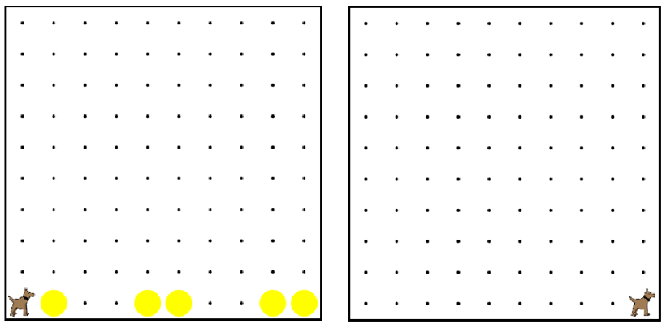

This is an example that we did in the video.
You are encouraged to play around with it, to see how it all works.
When you are done, click the arrow to go to the next problem.
這是我們在視頻中做了一個榜樣。我們鼓勵你玩它，看看它是如何工作的。當你完成後，單擊箭頭進入下一個問題。

// This program has karel walk down the 此程序卡雷爾走在
// row and clean up all of the tennis balls 行和清理所有的網球球
// on the way. 在路上/。
function start(){ 函數的開始(){
while(frontIsClear()){ 而（前面是明確的()){
cleanUp(); 淨化();
move(); 移動();
}
cleanUp(); 淨化();
}
function cleanUp(){ 清理功能(){
if(ballsPresent()){ 如果（球存在）
takeBall(); 取球();
}
}